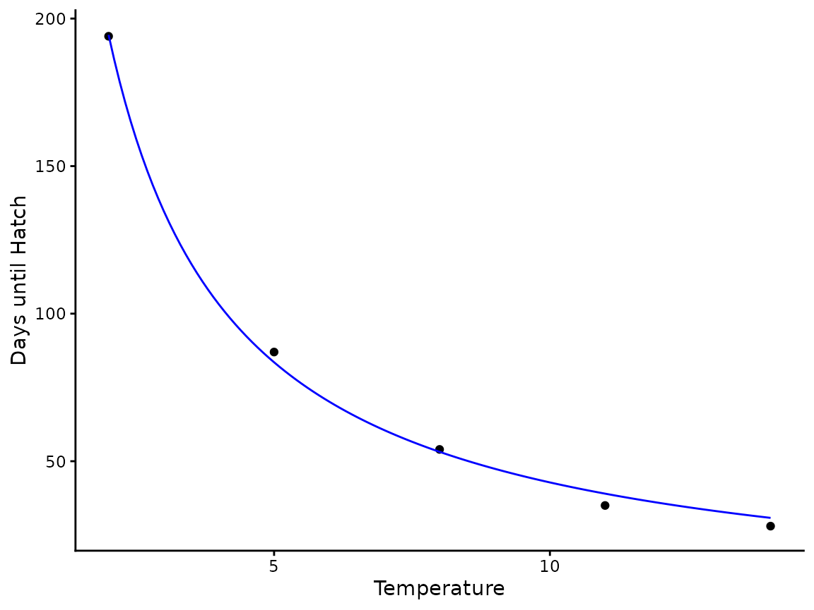
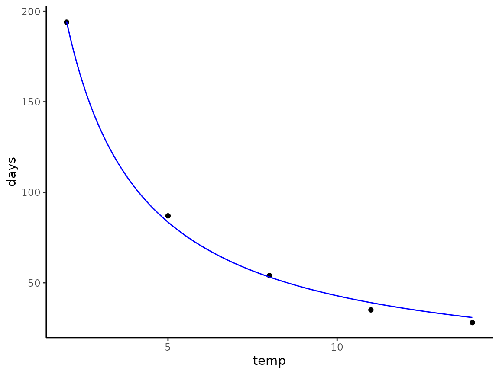

Parameterize hatchR Models
Morgan Sparks, Bryan M. Maitland
Source:vignettes/Parameterize_models.Rmd
Parameterize_models.RmdOverview
This vignette describes the process of parameterizing models for
predicting fish phenology using hatchR. The package
provides two options for choosing phenological models. One is to use
built-in model parameterizations within the package and the other is to
create your own using data you import. We will cover both options in
this vignette. First, we load hatchR:
Built-in parameterizations
The simplest way to get started is to use built-in parameterizations,
which are included in the model_table. This table includes
parameterizations for numerous salmonid species to predict both hatching
and emergence and can be selected using model_select().
Let get a sense of the table, which comes installed with
hatchR):
model_table
#> # A tibble: 51 × 5
#> author species model dev.type func
#> <chr> <chr> <chr> <chr> <chr>
#> 1 Beacham and Murray 1990 sockeye 2 hatch 1 /exp(6.727 - log(x + 2.394…
#> 2 Beacham and Murray 1990 sockeye 4 hatch 1/exp(8.734 + (-1.589*log(x …
#> 3 Beacham and Murray 1990 sockeye 5 hatch 1/exp(9.848 + (-1.583*log(x …
#> 4 Beacham and Murray 1990 sockeye 7 hatch 1/exp(5.379 + (-0.076*log(x)…
#> 5 Beacham and Murray 1990 sockeye 2 emerge 1 / exp(7.227 - log(x + 2.56…
#> 6 Beacham and Murray 1990 sockeye 4 emerge 1/exp(7.647 + (-1.134*log(x …
#> 7 Beacham and Murray 1990 sockeye 5 emerge 1/exp(9.404 + (-1.169*log(x …
#> 8 Beacham and Murray 1990 sockeye 7 emerge 1/exp(5.97 + (-0.276*log(x))…
#> 9 Beacham and Murray 1990 pink odd 2 hatch 1 / exp(6.663 - log(x + 2.55…
#> 10 Beacham and Murray 1990 pink odd 4 hatch 1/exp(7.962 + (-1.382*log(x …
#> # ℹ 41 more rowsWe see that model_table is a tbble with 51 rows and 5
columns:
-
author: The author(s) of the model -
species: The species the model is parameterized for -
model: The model number or type (specific to Beacham and Murray (1990) who created several models) -
dev.type: The phenological development type (i.e., hatch or emerge) -
func: The model expression / parameterization
You will use author, species,
model, and dev.type to select model
functions.
For instance, if you wanted to access the parameterization for sockeye hatching using model #2 from Beacham and Murray (1990) you would run:
sockeye_hatch_mod <- model_select(
author = "Beacham and Murray 1990",
species = "sockeye",
model = 2,
dev.type = "hatch"
)
#print out the expression to check
sockeye_hatch_mod
#> expression(1/exp(6.727 - log(x + 2.394)))Note, that the above arguments are equivalent to the first line and
four columns from model_table. Your model function
object—in this case sockeye_hatch_mod—can then be passed to
predict_phenology(), which we will demonstrate in the
Predicting Phenology vignettes.
To see all available characterizations use:
View(model_table)Creating custom models
hatchR also includes functionality to generate your own
custom model parameterizations for predicting hatching and emergence
phenology. Importantly, the custom parameterization
relies on the model format developed from model
2 of Beacham and Murray
(1990), which we chose because of its overall simplicity and
negligible loss of accuracy. See Beacham and
Murray (1990) and Sparks et al.
(2019) for more specific discussion regarding model 2 and the
development of the effective value approach.
The model follows the general format of:
Where i is the daily value and a fish hatches or emerges when the cumulative sum or
The function fit_model() uses data where average
incubation temperature (°C) and days to phenological event are the
inputs and parameterizes the above model for logea
and b. So, for example, to borrow data from Table 8.1 (pg. 183)
from Quinn (2018), we can generate a
custom hatch parameterization for brown trout.
You could either create a .csv file with those data and import them
with readr::read_csv() or alternatively, directly input
them as an object in R. We’ll use tibble() to create the
data, which in installed with hatchR and loaded using:
We can now create the data object:
# vector of temperatures
temperature <- c(2,5,8,11,14)
#vector of days to hatch
days_to_hatch <- c(194,87,54,35,28)
#make a tibble of the two vectors
quinn_bt_hatch <- tibble(temperature, days_to_hatch)
quinn_bt_hatch
#> # A tibble: 5 × 2
#> temperature days_to_hatch
#> <dbl> <dbl>
#> 1 2 194
#> 2 5 87
#> 3 8 54
#> 4 11 35
#> 5 14 28We can plot our data for a sanity check using ggplot2.
First load the package:
Now plot the data:
ggplot(quinn_bt_hatch, aes(x = temperature, y = days_to_hatch)) +
geom_point() +
theme_classic()
We can now use fit_model() to create our custom
parameterization from our data.
# brown trout hatch mod
bt_hatch_mod <- fit_model(df = quinn_bt_hatch,
temp = temperature,
days = days_to_hatch)The output of fit_model() is a list with numerous
elements, including the full model, coefficients for
logea and b, the expression you will pass
to predict_phenology(), a plot to see your fit for your
data, and some diagnostic variables. You can see the full extent
using
bt_hatch_modWe can inspect a plot of predicted versus observed data, which looks good.
bt_hatch_mod$pred_plot
The vast majority of the time, what you will want is the actual
expression which you will pass to predict_phenology() in
the model = ... argument of that function, which you can
either pass directly with the $ operator by calling
$mod element of the list (e.g.,
model = bt_hatch_mod$mod)) or set as an object to pass.
Like so
# creae an object with the model expression to pass to predict_phenology()
bt_hatch_exp <- bt_hatch_mod$modImportant considerations for your custom models
Your model fits will only be as good as the data they are generated from. Here are some important considerations:
We recommend a minimum of four temperature x hatch/emerge data points.
-
Data should be spread across temperatures as much as possible.
It’s much better to have a fit derived from data for temperatures such as 3, 7, 10, 14 °C than it is 8, 9, 10, 11 °C.
The behavior of the model function around the tails of very cold or warm temperatures (relative to the fish species) drive the fit of the function, so more extreme temperatures are helpful.
Think hard about whether the data you are generating your parameterization from match the data from which you are trying to predict or if you are extrapolating beyond what is sensible for the model.
Understand your response variable, most models are fit to 50% hatch or emergence for a family group or population. However, your data may be different and you should interpret your results accordingly (e.g. comparisons between 50% hatch from population A to 95% hatch of population B may not be reasonable).
References
:::::::